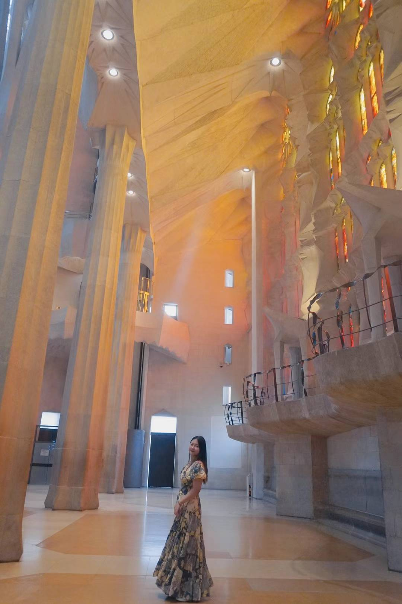

Hello! My name is Isabelle, and I’m a senior at Northeastern University, double majoring in both Computer Science and Business Administration. In addition to my academic pursuits, I am minoring in Music, a passion that has been close to my heart since I was six years old when I first began learning the piano. Over the years, I’ve expanded my musical talents and now also play the classical guitar and flute. My love for music knows no bounds, encompassing everything from classical compositions to the vibrant world of K-pop. I’m an avid fan of groups like Enhypen, &team, and Boynextdoor, and I often attend their concerts and online fansign events to connect with their artistry on a deeper level.
Beyond music, I have a deep love for traveling and have been fortunate to explore many corners of the world. My journey began as a child, traveling across various regions of China with my parents during primary school. In middle school, I had the opportunity to visit Korea with my school, and by high school, my adventures expanded to Japan, Singapore, Hong Kong, and Los Angeles. In college, traveling has become a cherished tradition, and every holiday, my friends and I embark on new adventures. Together, we’ve visited breathtaking destinations like Yellowstone National Park, Alaska, Japan, France, and Spain. We are already making plans for our next big trip to Italy, which we are excited to take after graduation in May!
